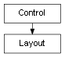

class cymel.ui.layout.Layout¶

-
class
cymel.ui.layout.Layout¶ ベースクラス:
cymel.ui.control.Controlmel UI の layout ラッパークラス。
withで setParent が行える。 この挙動は pymel より改善している （pymel では、必ず親に戻ってしまい元の状態には戻らない）。Methods:
UICMDchild([idxOrPath])階層下のコントロールを得る。 childNames()子の名前リストを得る。 children()子のリストを得る。 clear()子を全て削除する。 delete()このレイアウトを削除する。 exists()UIが存在しているかどうか。 makeCurrent()これをカレントペアレントにする。 numChildren()子の数を得る。 pop()カレントペアレントを一つ上に移動させる。 Methods Details:
-
UICMD()¶
-
clear()¶ 子を全て削除する。
-
delete()¶ このレイアウトを削除する。
-
makeCurrent()¶ これをカレントペアレントにする。
-
static
pop()¶ カレントペアレントを一つ上に移動させる。
-